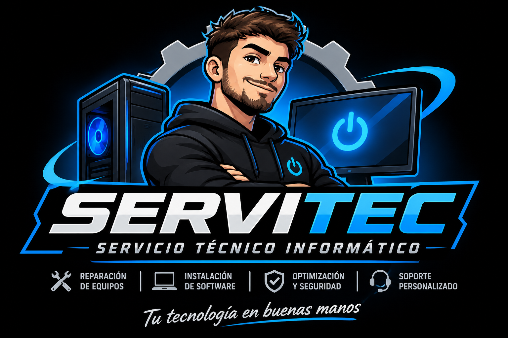

Diagnóstico y presupuesto
Revisamos el equipo, te explicamos qué pasa y qué conviene hacer. Sin trabajo sin tu aprobación.
Reparación, optimización y mantenimiento de PC y notebooks. Trabajamos a domicilio, remoto o con recepción coordinada. Primero el diagnóstico, después el presupuesto.
Tu tecnología en buenas manos.

Desde una PC que no enciende hasta una notebook que necesita mantenimiento. Siempre con diagnóstico y presupuesto previo.
Revisamos el equipo, te explicamos qué pasa y qué conviene hacer. Sin trabajo sin tu aprobación.
Menos ruido, mejores temperaturas y más vida útil para tu PC o notebook.
Arranque más rápido y más fluidez para trabajar, estudiar o jugar.
Instalación limpia, drivers, actualizaciones y configuración para tu uso.
Limpieza de malware y pautas claras para evitar que vuelva a pasar.
Respaldo, recuperación cuando es posible y asistencia a distancia para software.
Sabemos que dejar la PC en un taller genera dudas. Por eso el proceso es transparente desde el primer mensaje.
Contanos qué le pasa a tu PC o notebook por WhatsApp. Te orientamos y coordinamos.
Revisamos el equipo a domicilio o con recepción coordinada en Esmeralda 4132.
Te explicamos el trabajo, el tiempo y el costo antes de avanzar. Vos decidís.
Realizamos el trabajo aprobado y coordinamos la entrega o el soporte remoto.
Atendemos en Vicente López y localidades cercanas. Si no estás seguro de si llegamos, escribinos y lo vemos.
Lunes a viernes de 10:30 a 19:30. Sábados y domingos cerrado.
Escribinos por WhatsApp al 11 5868-1444. Contanos qué le pasa a tu PC, qué uso le das y en qué zona estás. Te respondemos con los próximos pasos.
El diagnóstico a domicilio tiene un valor de $15.000 ARS e incluye la visita y la revisión del equipo. Después del diagnóstico te informamos el presupuesto del trabajo. No se realiza ninguna reparación sin tu aprobación.
Sí, trabajamos con notebooks y PC de escritorio. También hacemos mantenimiento, instalación de Windows, cambio de SSD/RAM, eliminación de virus y soporte remoto.
Consultá por WhatsApp según el modelo y el problema. Si no es un trabajo que podamos resolver, te lo decimos con claridad.
Te explicamos el diagnóstico y las alternativas. Si la reparación no conviene, evaluamos opciones como actualizar el equipo o recuperar los datos antes de tomar una decisión.
La recepción está en Esmeralda 4132, Vicente López, pero se atiende con cita previa. Escribinos antes de venir para coordinar día y horario.
Respondemos por WhatsApp. Si preferís, también podés llamarnos en horario de atención.